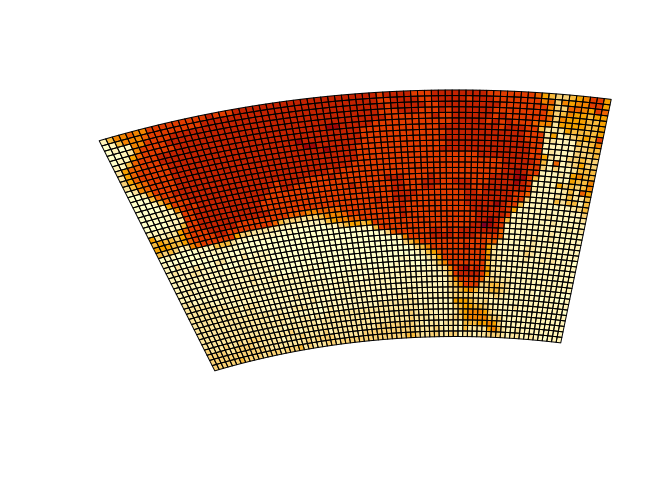
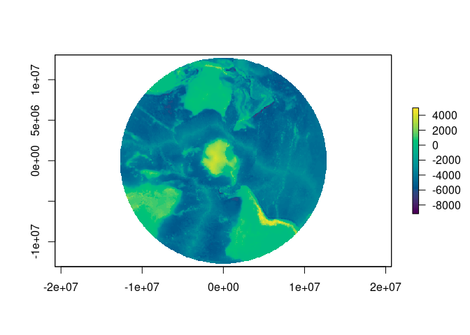

A quadmesh is a dense mesh describing a topologically continuous surface of 4-corner primitives. This is also known as a cell-based raster but in those contexts the corner coordinates and the continuous nature of the mesh is completely implicit. By making the dense mesh explicit we have access to every corner coordinate (not just the centres) which allows for some extra facilities over raster grids.
This package provides helpers for working with this mesh interpretation of gridded data to enable
- arbitrary reprojection of raster cells without information loss (
mesh_plot). - the corner-based continuous interpretation of a grid (
quadmesh()). - the centre-based continuous interpretation of a grid (
triangmesh()). - the corner-based discrete interpretation of a grid (
dquadmesh()). - the centre-based discrete interpretation of a grid (
dtriangmesh()). - easy plotting of grids in 3D visualization tools (quad or triangle primitives for
rgl::shade3d). - fast polygonization of individual cells, in spex::polygonize.
- barycentric interpolation from a triangle mesh (
bary_index()). - conversion from quad to triangle primitives from the area interpretation (
triangulate_quads()).
Installation
You can install:
- the latest released version from CRAN with
install.packages("quadmesh")- the latest development version from Github with
## install.packages("remotes")
remotes::install_github("hypertidy/quadmesh")Examples
Quadmesh provides a number of key features that are not readily available to more commonly used geospatial applications.
The corner-based interpretation of a grid
In raster there is an implicit “area-based” interpretion of the extent and value of every cell. Coordinates are implicit, and centre-based but the extent reflects a finite and constant width and height.
library(quadmesh)
#> Registered S3 method overwritten by 'quadmesh':
#> method from
#> reproj.quadmesh reproj
library(raster)
#> Loading required package: sp
r <- raster(matrix(1:12, 3), xmn = 0, xmx = 4, ymn = 0, ymx = 3)
qm <- quadmesh(r)
op <- par(xpd = NA)
plot(extent(r) + 0.5, type = "n", axes = FALSE, xlab = "", ylab = "")
plot(r, col = rep(c("palevioletred3", "aliceblue"), 6), add = TRUE)
text(coordinates(r), lab = seq_len(ncell(r)))
plot(extent(r), add = TRUE)
## with quadmesh there are 20 corner coordinates
points(t(qm$vb[1:2, ]), pch = "x", cex = 2)
par(op)Every individual quad is described implicitly by index into the unique corner coordinates. This format is built upon the mesh3d class of the rgl package.
## coordinates, transpose here
qm$vb[1:2, ]
#> [,1] [,2] [,3] [,4] [,5] [,6] [,7] [,8] [,9] [,10] [,11] [,12] [,13] [,14]
#> x 0 1 2 3 4 0 1 2 3 4 0 1 2 3
#> y 3 3 3 3 3 2 2 2 2 2 1 1 1 1
#> [,15] [,16] [,17] [,18] [,19] [,20]
#> x 4 0 1 2 3 4
#> y 1 0 0 0 0 0
## indexes, also transpose
qm$ib
#> [,1] [,2] [,3] [,4] [,5] [,6] [,7] [,8] [,9] [,10] [,11] [,12]
#> [1,] 1 2 3 4 6 7 8 9 11 12 13 14
#> [2,] 2 3 4 5 7 8 9 10 12 13 14 15
#> [3,] 7 8 9 10 12 13 14 15 17 18 19 20
#> [4,] 6 7 8 9 11 12 13 14 16 17 18 19This separation of geometry (the 20 unique corner coordinates) and topology (12 sets of 4-index) is the key concept of a mesh and is found in many domains that involve computer graphics and modelling.
The centre-based interpretation of a grid
A quadmesh is centre-based, and each raster pixel occupies a little rectangle, but the centre-based interpretation is better described by a mesh of triangles.
Every centre point of the grid data is a node in this mesh, while the inside corners with their ambiguous value from 4 neighbouring cells are not explicit. Note that a triangulation can be top-left/bottom-right aligned as here, or bottom-left/top-right aligned, or be a mixture.
op <- par(xpd = NA)
plot(extent(r) + 0.5, type = "n", axes = FALSE, xlab = "", ylab = "")
plot(r, col = rep(c("palevioletred3", "aliceblue"), 6), add = TRUE)
tri <- triangmesh(r)
points(t(tri$vb[1:2, ]))
polygon(t(tri$vb[1:2, head(as.vector(rbind(tri$it, NA)), -1)]))
par(op)Conversion from quad to triangle primitives
Quads are trivially converted into triangle form by splitting each in two. Note that this is different again from the centre-based triangle interpretation.
tri2 <- qm
tri2$it <- triangulate_quads(tri2$ib)
tri2$ib <- NULL
tri2$primtivetype <- "triangle"
op <- par(xpd = NA)
plot(extent(r) + 0.5, type = "n", axes = FALSE, xlab = "", ylab = "")
plot(r, col = rep(c("palevioletred3", "aliceblue"), 6), add = TRUE)
points(t(tri2$vb[1:2, ]))
polygon(t(tri2$vb[1:2, head(as.vector(rbind(tri2$it, NA)), -1)]), lwd = 2, lty = 2)
Arbitrary reprojection of raster cells
The in-built etopo data set is used to create a plot in a local map projection. Here each cell is drawn by reprojecting it directly and individually into this new coordinate system.
library(quadmesh)
library(raster)
## VicGrid
prj <- "+proj=lcc +lat_1=-36 +lat_2=-38 +lat_0=-37 +lon_0=145 +x_0=2500000 +y_0=2500000 +ellps=GRS80 +towgs84=0,0,0,0,0,0,0 +units=m +no_defs"
er <- crop(etopo, extent(110, 160, -50, -20))
#> Warning in showSRID(uprojargs, format = "PROJ", multiline = "NO"): Discarded datum WGS_1984 in CRS definition,
#> but +towgs84= values preserved
#> Warning in showSRID(uprojargs, format = "PROJ", multiline = "NO"): Discarded datum WGS_1984 in CRS definition,
#> but +towgs84= values preserved
system.time(mesh_plot(er, crs = prj))
#> user system elapsed
#> 0.641 0.020 0.662
## This is faster to plot and uses much less data that converting explicitly to polygons.
library(sf)
#> Linking to GEOS 3.8.0, GDAL 3.0.4, PROJ 7.0.0
p <- st_transform(spex::polygonize(er), prj)
plot(st_geometry(p), add = TRUE)
system.time(plot(p, border = NA))
#> user system elapsed
#> 0.407 0.020 0.427
pryr::object_size(er)
#> Registered S3 method overwritten by 'pryr':
#> method from
#> print.bytes Rcpp
#> 39.6 kB
pryr::object_size(p)
#> 1.68 MB
pryr::object_size(quadmesh(er))
#> 169 kBThe data size and timing benefits are more substantial for larger data sets.
We get exactly what we asked for from mesh_plot, without the complete remodelling of the data required by grid resampling.
pol <- "+proj=stere +lat_0=-90 +lon_0=147 +datum=WGS84"
mesh_plot(etopo, crs = pol)
plot(projectRaster(etopo, crs = pol), col = viridis::viridis(64))
#> Warning in showSRID(uprojargs, format = "PROJ", multiline = "NO"): Discarded datum WGS_1984 in CRS definition,
#> but +towgs84= values preserved
#> Warning in showSRID(uprojargs, format = "PROJ", multiline = "NO"): Discarded datum Unknown based on WGS84 ellipsoid in CRS definition,
#> but +towgs84= values preserved
#> Warning in rgdal::rawTransform(projfrom, projto, nrow(xy), xy[, 1], xy[, : NOT
#> UPDATED FOR PROJ >= 6
#> Warning in rgdal::rawTransform(projection(obj), crs, nrow(xy), xy[, 1], : NOT
#> UPDATED FOR PROJ >= 6
#> Warning in rgdal::rawTransform(projto_int, projfrom, nrow(xy), xy[, 1], : NOT
#> UPDATED FOR PROJ >= 6
#> Warning in showSRID(uprojargs, format = "PROJ", multiline = "NO"): Discarded datum WGS_1984 in CRS definition,
#> but +towgs84= values preserved
#> Warning in showSRID(uprojargs, format = "PROJ", multiline = "NO"): Discarded datum Unknown based on WGS84 ellipsoid in CRS definition,
#> but +towgs84= values preserved
#> Warning in showSRID(uprojargs, format = "PROJ", multiline = "NO"): Discarded datum Unknown based on WGS84 ellipsoid in CRS definition,
#> but +towgs84= values preserved
Easy 3D plotting of grids
The quadmesh and triangmesh types are extensions of the rgl class mesh3d, and so are readily used by that package’s high level functions such as shade3d() and addNormals().
Fast polygonization of individual cells
The spex package has functions polygonize() and qm_rasterToPolygons_sp() which provide very fast conversion of raster grids to a polygon layer with 5 explicit coordinates for every cell. (stars and sf now provide an even faster version by using GDAL).
rr <- disaggregate(r, fact = 20)
system.time(spex::polygonize(rr))
#> user system elapsed
#> 0.094 0.000 0.095
system.time(raster::rasterToPolygons(rr))
#> user system elapsed
#> 0.659 0.000 0.660
## stars has now improved on spex by calling out to GDAL to do the work
system.time(sf::st_as_sf(stars::st_as_stars(rr), merge = FALSE, as_points = FALSE))
#> user system elapsed
#> 0.076 0.004 0.081Barycentric interpolation from a triangle mesh
Using a triangulation version of a raster grid we can build an index of weightings for a new of of arbitrary coordinates to estimate the implicit value at each point as if there were continuous interpolation across each primitive.
WIP - see bary_index() function.
Development
Have feedback/ideas? Please let me know via issues.
Many aspects of this package have developed in conjunction with the angstroms package for dealing with ROMS model output.
Please note that this project is released with a Contributor Code of Conduct. By participating in this project you agree to abide by its terms.